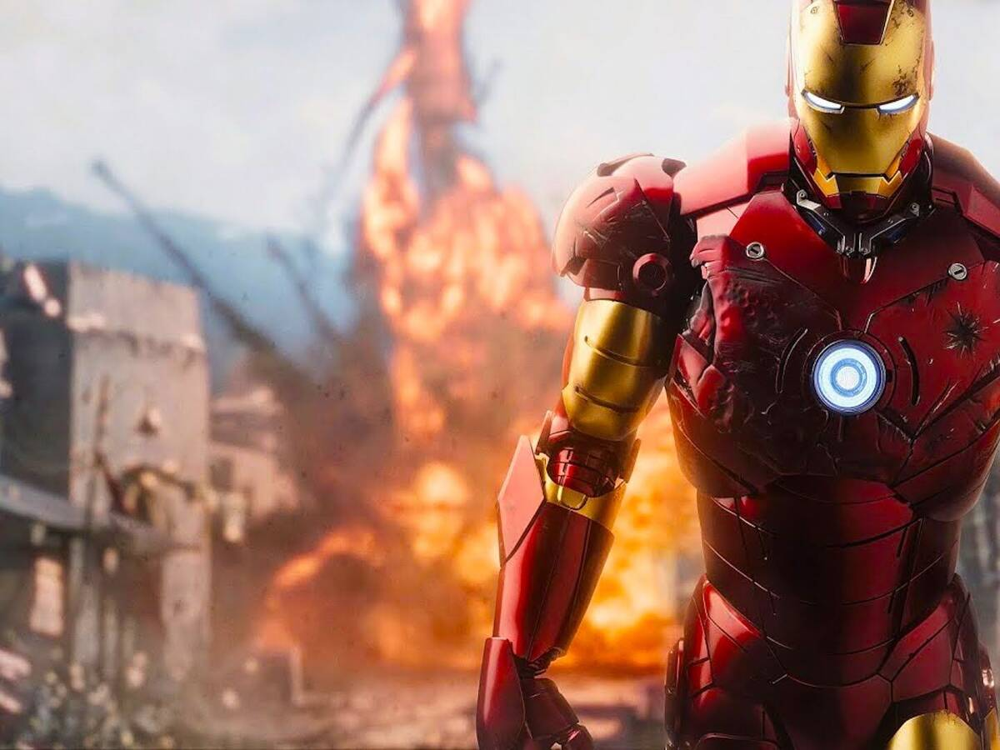

Tabla Iron man
Armaduras
Edad
Fecha de creación
Hijos
61 trajes de Iron Man diferentes en los cómics, no muy lejos de los 85 en el universo cinematográfico
53 años
(Marzo de 1963)
Por ahora la única hija confirmada de Tony es la pequeña Morgan H.
